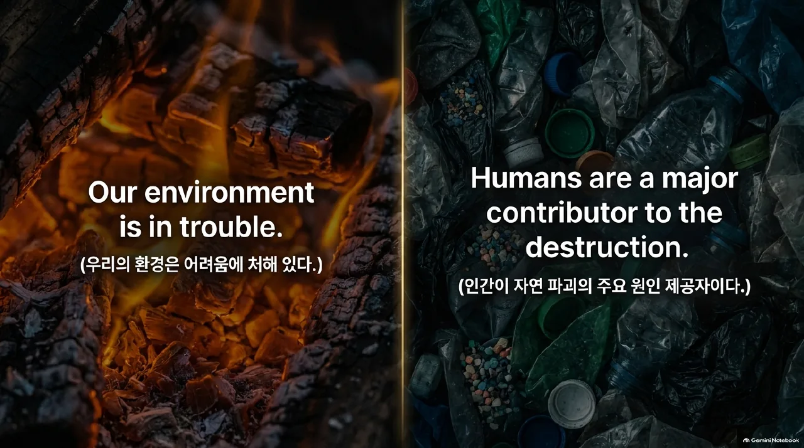
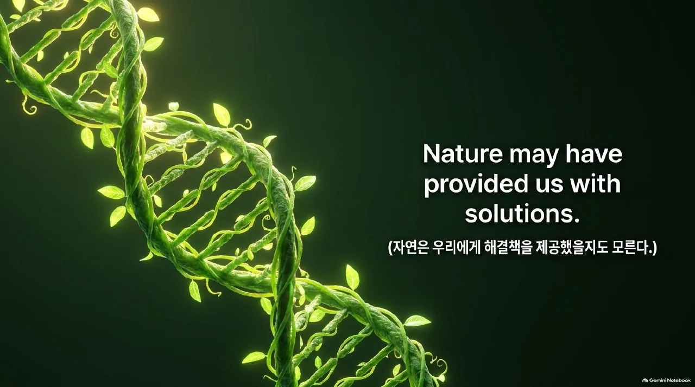
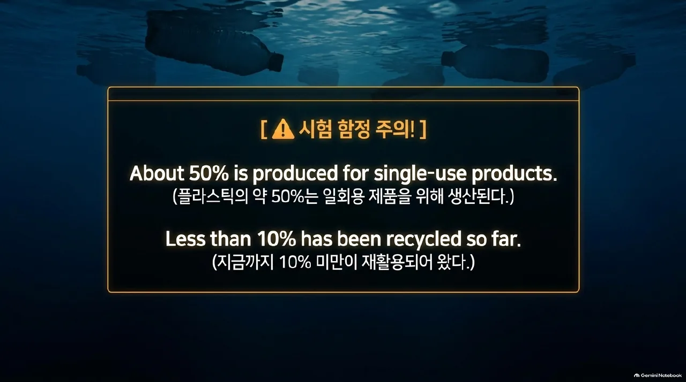
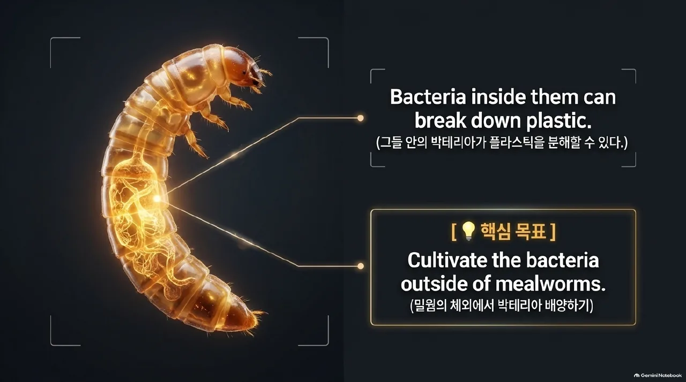
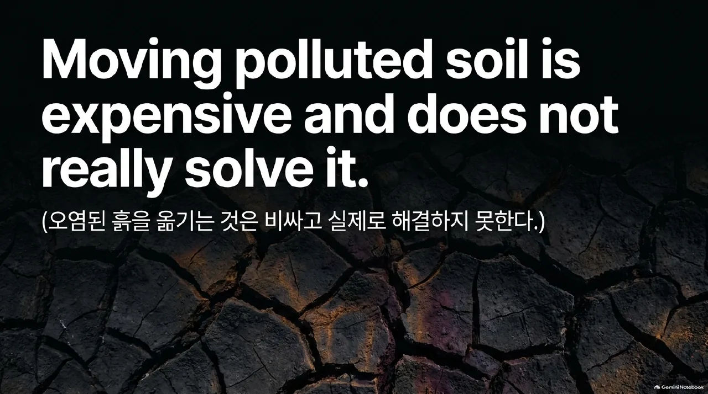
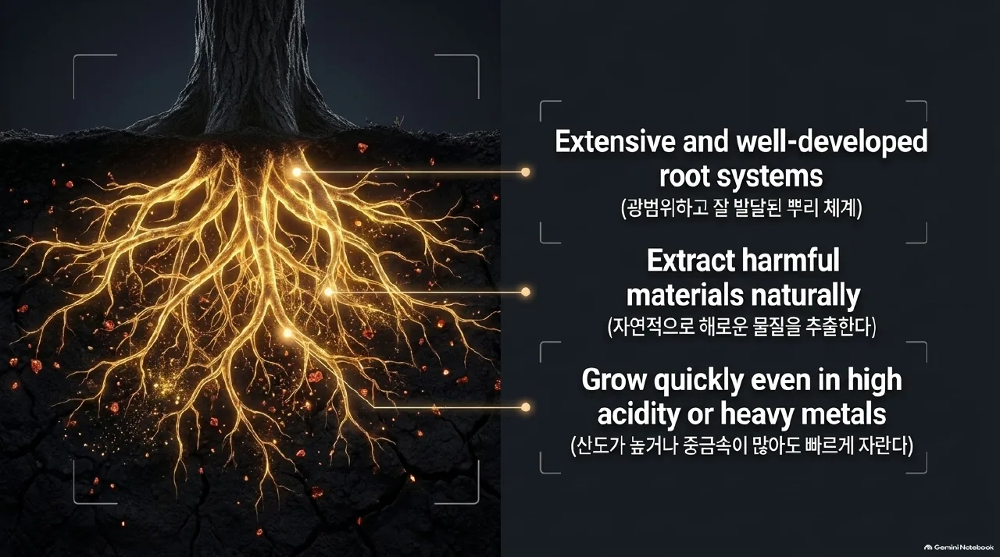
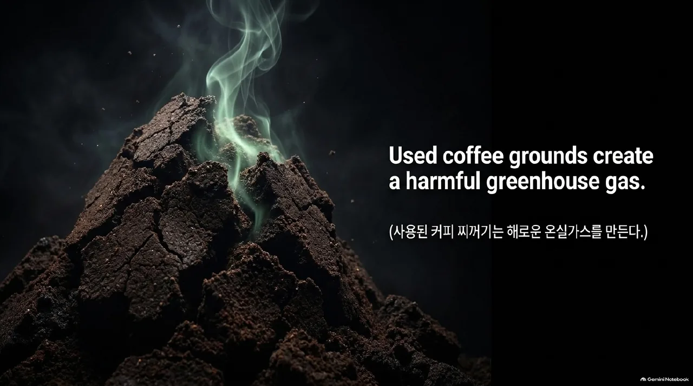
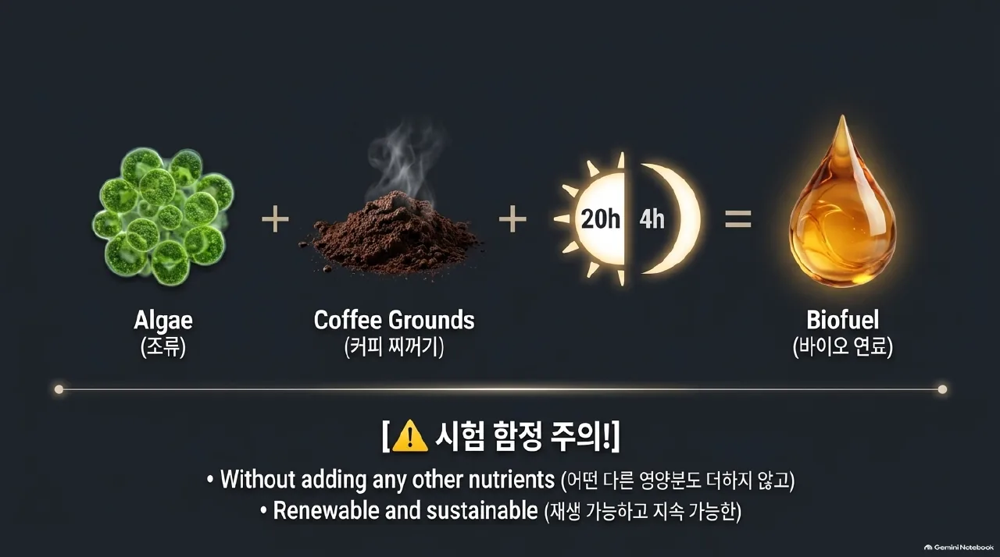
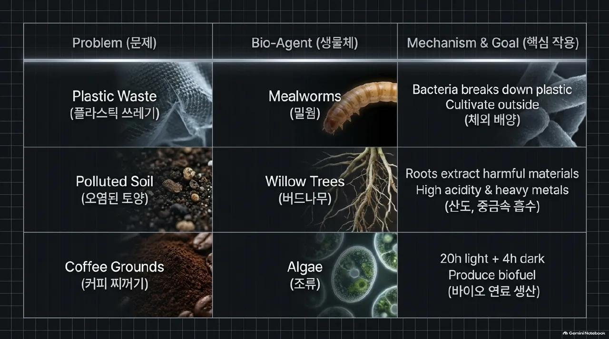
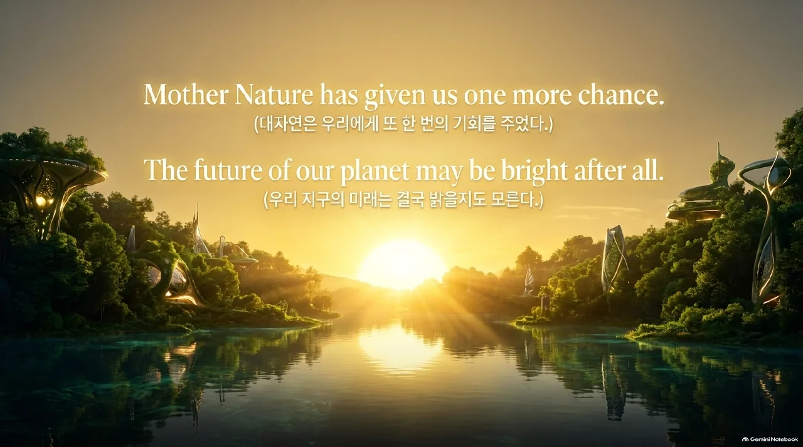

4과 좌본문우해석
영어 조각과 해석 조각이 순서대로 짝이에요. 읽으면서 영어 → 한글 순서로 이어 보세요.
① 위기에 처한 환경
1
Our environment is in trouble.
우리의 환경은 어려움에 처해 있다.
2
With the planet becoming warmer,
지구가 더 따뜻해지면서
sea levels are rising
해수면이 상승하고 있다
and natural disasters such as forest fires and floods are increasing.
그리고 산불과 홍수 같은 자연재해도 증가하고 있다.
3
More and more waste is also being produced.
또한 점점 더 많은 쓰레기가 생산되고 있다.
4
Plastic, in particular,
특히 플라스틱은
is causing problems with soil and water pollution.
토양과 수질 오염에 관련한 문제를 야기하고 있다.
5
It is clear that humans are a major contributor to the destruction of nature.
인간이 자연 파괴의 주요 원인 제공자라는 것은 분명하다.

6
Will we be able to protect the environment from mountains of plastic?
산더미 같은 플라스틱으로부터 우리가 환경을 보호할 수 있게 될까?
7
Can we stop climate change from reaching dangerous levels?
기후 변화가 위험 수준에 도달하지 못하게 우리가 할 수 있을까?
8
Achieving these goals seems difficult.
이러한 목표들을 이루는 것은 어려워 보인다.
9
Nature, however, may have provided us with solutions to these problems.
그러나 자연은 우리에게 이런 문제들에 대한 해결책을 제공했을지도 모른다.

10
Here are three areas where changes are already happening.
여기 이미 변화가 일어나고 있는 세 영역이 있다.
② 플라스틱 쓰레기 처리하기 (Dealing with Plastic Waste)
1
About fifty percent of plastic
플라스틱의 약 50%는
is produced for single-use products.
일회용 제품을 위해 생산된다.
2
That means the items are used just once and then discarded.
그것은(=일회용으로 생산된다는 것은) 제품들이 딱 한 번 사용된 후 버려진다는 것을 의미한다.
3
Do you ever stop to think
여러분은 생각하기 위해 멈춰 본 적이 있는가
about where these plastic items go
이 플라스틱 제품들이 어디로 가는지에 대해
after you throw them away?
여러분이 그것들을 버린 후에?
4
Recycling can help reduce the amount of plastic in our landfills.
재활용하는 것은 우리의 매립지로 가는 플라스틱의 양을 줄이는 것을 도울 수 있다.
5
However, less than ten percent of the world’s plastic waste
그러나 세계 플라스틱 쓰레기의 10% 미만이
has been recycled so far.
지금까지 재활용되어 왔다.

6
Often, plastic waste is moved to places
종종 플라스틱 쓰레기는 어떤 곳들로 옮겨지는데
where it is just dumped or burned.
그곳에서는 그저 내버려지거나 태워진다.
7
Furthermore, between 8 and 14 million metric tons of plastic
게다가 8백만에서 1천4백만 톤의 플라스틱이
end up in the ocean every year.
매년 바다에 유입된다.
8
This puts many marine species in danger.
이것은(=플라스틱이 바다에 유입되는 것) 많은 해양 종들을 위험에 빠뜨린다.
9
With this in mind,
이것(=플라스틱 문제)을 염두에 두고
scientists are turning to mealworms.
과학자들은 밀웜에 의지하고(몰두하고) 있다.
10
Mealworms are the larvae of a certain species of beetle.
밀웜은 특정 종류의 딱정벌레의 유충이다.
11
Special bacteria live inside them.
특별한 박테리아가 그들 안에 산다.
12
These bacteria can break down plastic.
이 박테리아는 플라스틱을 분해할 수 있다.
13
This means that mealworms can actually feed on plastic.
이것은(=박테리아가 플라스틱을 분해할 수 있다는 것은) 밀웜이 사실상 플라스틱을 먹고 살 수 있다는 것을 의미한다.
14
Scientists are now looking for ways
과학자들은 이제 방법을 찾고 있다
to cultivate the bacteria outside of mealworms.
밀웜의 체외에서 박테리아를 배양하는.

15
They also want to speed up the process
그들은 또한 과정의 속도를 올리기를 원한다
by which the bacteria break down plastic.
박테리아가 플라스틱을 분해하는.
16
This may help us keep our landfills plastic-free.
이것은(=박테리아 배양과 분해 속도 향상) 우리가 우리의 매립지를 플라스틱 없는 상태로 유지하도록 도울지도 모른다.
③ 오염된 토양 정화하기 (Purifying Polluted Soil)
1
Mining and other industries
광산업과 다른 산업들이
are causing soil pollution across the globe.
전 세계적으로 토양 오염을 일으키고 있다.
2
Although polluted soil can be dug up and transported to a landfill,
비록 오염된 흙이 파내져서 매립지로 옮겨질 수는 있지만
this process is expensive.
이 과정은 비용이 많이 든다.
3
Moreover, it only moves the problem to another area
게다가 이것(=이 과정)은 단지 문제를 다른 곳으로 옮기며
and does not really solve it.
그것(=문제)을 실제로 해결하지는 않는다.

4
Fortunately, there is an eco-friendly and cost-effective way
다행히도 친환경적이고 비용 대비 효과적인 방법이 있다
to restore polluted soil—
오염된 흙을 복구하는
planting willow trees.
바로 버드나무를 심는 것이다.
5
These amazing trees have extensive and well-developed root systems.
이 놀라운 나무들은 광범위하고 잘 발달된 뿌리 체계를 가지고 있다.
6
As a result, they naturally extract a wide range of harmful materials from the soil.
결과적으로 그들은 토양으로부터 광범위한 해로운 물질들을 자연적으로 추출한다.
7
They can also grow quickly,
그들은 또한 빠르게 자랄 수 있다
even in soil with a high acidity level or a lot of heavy metals in it.
심지어 산도가 높거나 안에 중금속을 많이 품은 토양에서도.

8
Research on the effectiveness of using willow trees for this purpose
이러한 목적으로 버드나무를 활용하는 것의 효율성에 대한 연구가
is in development.
진행되고 있다.
9
Scientists have found
과학자들은 알아냈다
that some species of willow trees are able to absorb harmful materials better than others.
몇몇 종류의 버드나무가 다른 것들에 비해 해로운 물질을 더 잘 흡수할 수 있다는 것을.
10
Therefore, this promising area should be further explored
그러므로 이 촉망받는 분야는 더 깊게 탐구되어야 한다
to find out which trees are the most effective.
어떤 나무들이 가장 효과적인지를 찾아내기 위해.
11
In time, we may be able to clean up our land with willow trees.
조만간 우리는 버드나무로 우리의 땅을 깨끗하게 할 수 있을지도 모른다.
④ 조류 바이오 연료 생산하기 (Producing Algae Biofuel)
1
Statistics show
통계 자료는 보여 준다
that about thirty to forty percent of people in the world drink coffee each day.
세계의 약 30~40%의 사람들이 매일 커피를 마신다는 것을.
2
The coffee-making process, however, generates used coffee grounds,
그러나 커피 만드는 과정은 커피 찌꺼기를 발생시키는데
which are normally sent to landfills.
이것들은 보통 매립지로 보내진다.
3
There, they can create a harmful greenhouse gas.
거기(=매립지)에서 그것들(=커피 찌꺼기)은 해로운 온실가스를 만들 수 있다.

4
Unfortunately, there’s no way
불행하게도 방법은 없다
to stop everyone in the world from drinking coffee.
세계의 모든 사람들이 커피를 마시는 것을 멈추게 할.
5
However, we can reduce greenhouse gas emissions
그러나 우리는 온실가스 배출을 줄일 수 있다
by turning used coffee grounds into biofuel.
사용된 커피 찌꺼기를 바이오 연료로 바꿈으로써.
6
Biofuel is a natural fuel
바이오 연료는 천연 연료이다
that is made from plant or animal sources.
식물이나 동물성 원료로 만들어진.
7
Researchers have found
연구자들은 알아냈다
that they can grow algae on old coffee grounds without adding any other nutrients.
그들이 오래된 커피 찌꺼기에서 어떤 다른 영양분도 더하지 않고 조류를 자라게 할 수 있다는 것을.
8
If these algae are exposed to twenty hours of light and four hours of darkness each day,
만약 이 조류가 매일 20시간의 빛과 4시간의 어둠에 노출되면
they eventually produce high-quality biofuel.
그들은 마침내 양질의 바이오 연료를 생산한다.
9
The biofuel is renewable and sustainable,
이 바이오 연료는 재생 가능하고 지속 가능하다
and it creates only a small amount of emissions.
그리고 그것은 적은 양의 배출물만 만들어 낸다.

10
These are just a few solutions
이것들은(=밀웜·버드나무·조류 바이오 연료) 소수의 해결책들에 불과하다
we can find in nature.
우리가 자연에서 찾을 수 있는.

11
There could be many more possible solutions
훨씬 더 많은 가능성 있는 해결책들이 있을 수 있다
to the problems we currently face.
우리가 현재 직면한 문제들에 대한.
12
It seems that Mother Nature has given us one more chance.
대자연은 우리에게 또 한 번의 기회를 준 것처럼 보인다.
13
In return, we need to look for more ways
보답으로 우리는 더 많은 방법을 찾을 필요가 있다
to keep the environment healthy and clean.
환경을 건강하고 깨끗하게 지킬.
14
If we do, the future of our planet may be bright after all.
우리가 그렇게 한다면 우리 지구의 미래는 결국 밝을지도 모른다.

비타민 영어클리닉 · 청석고 공통영어2